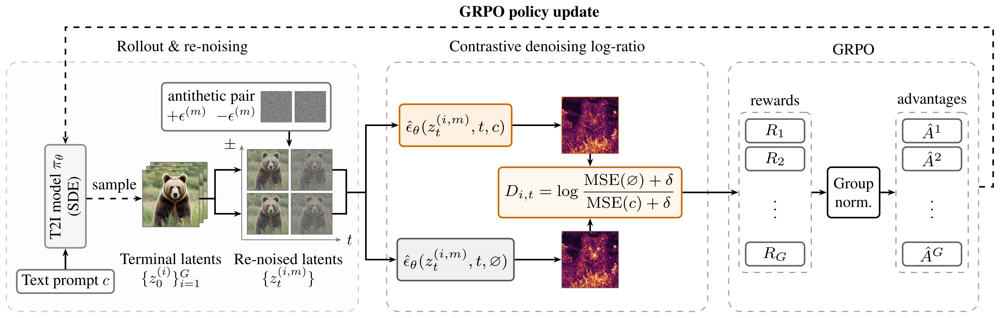
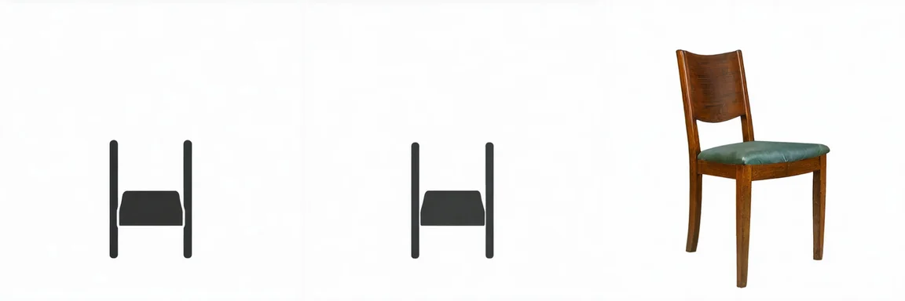
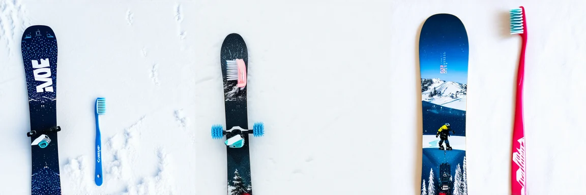
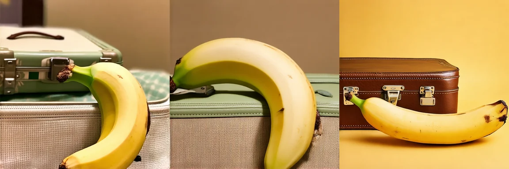
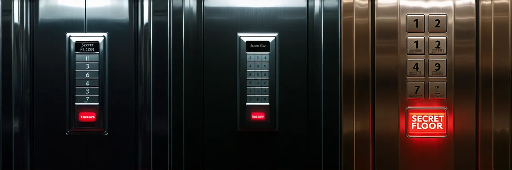
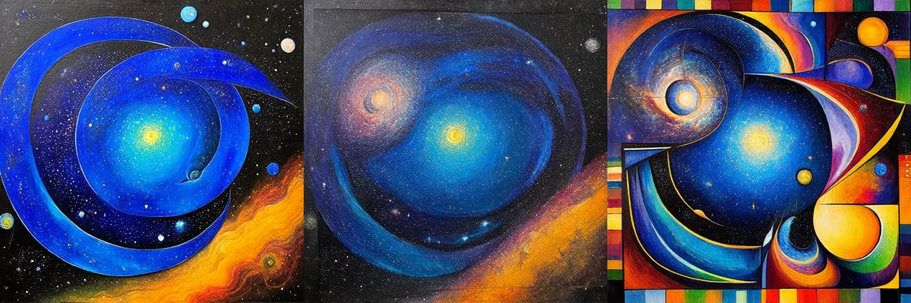

A label-free reward for Flow-GRPO that scores how much the prompt helps a text-to-image model denoise its own sample, not how well the model denoises it.
1Seoul National University2EverEx
Post-training text-to-image generators with reinforcement learning usually relies on external reward models that need annotated preferences or auxiliary evaluators and are prone to reward hacking. We show that the generator's own denoising accuracy, used by a recent intrinsic reward, is a poor proxy for prompt fidelity. Within a same-prompt group, this absolute self-confidence is dominated by image complexity and ranks correct samples above incorrect ones near chance. We introduce CANDOR (Contrastive Alignment from Null-referenced Denoising lOg-Ratio), the log-ratio of unconditional to conditional denoising errors under shared noise probes, which measures how much the prompt helps the model denoise its own sample. It cancels prompt-independent difficulty that scales both errors and ranks the better of two same-prompt samples higher in 60% and 63% of pairs on compositional generation and text rendering. As the only Flow-GRPO reward for a flow-matching model, CANDOR improves text rendering, aesthetic and human-preference scores over the base model and a prior absolute self-confidence reward, with text-rendering and preference gains that stronger classifier-free guidance does not reproduce. On public Flow-GRPO adapters trained on external rewards, CANDOR further raises PickScore and ImageReward, so it can complement those rewards.
A sample can be easy to denoise because it is simple, such as a flat background or a texture-free object, not because it follows the prompt. Image complexity makes a sample harder to denoise with or without the prompt, whereas prompt fidelity should only help the prompt-conditioned prediction.
CANDOR therefore rewards the contrast between the two predictions on the same re-noised latent and noise:

Sample a group of images per prompt, then re-noise each final latent at several timesteps with antithetic noise pairs (+ε, −ε).
Predict the noise with and without the prompt on the same latent and noise. D is the log-ratio of the two errors.
Average the z-scored D over timesteps into one reward per sample, normalize rewards within the group into advantages, and update the policy with Flow-GRPO.
GRPO centers rewards within each prompt's group, so only their relative values drive the update. Within these groups, absolute self-confidence S is dominated by image complexity and ranks correct samples above incorrect ones near chance.
| Score | GenEval | OCR |
|---|---|---|
| Within-group correlation | ||
| Absolute S vs. complexity | −0.75 | −0.74 |
| CANDOR D vs. complexity | 0.12 | 0.11 |
| CANDOR D vs. absolute S | −0.11 | −0.09 |
| Within-group concordance with correctness ↑ | ||
| Complexity (log PNG size) | 0.53 | 0.50 |
| Absolute S | 0.48 | 0.51 |
| CANDOR D | 0.60 | 0.63 |
| Diagnostic | ||
| CANDOR D (w/o complexity) | 0.60 | 0.63 |
Offline analysis of intrinsic rewards. Base-model test-prompt rollouts at CFG 7.0. Concordance: fraction of same-prompt pairs ranked correctly (0.5 = chance); w/o complexity: log PNG size regressed out. Bold: best; underline: second best in the concordance block.
As the only reward, CANDOR improves text rendering, aesthetic and human-preference scores over the base model and over SOLACE, a prior absolute self-confidence reward, on external metrics that the reward never sees. On public Flow-GRPO adapters trained on external rewards, it further raises PickScore and ImageReward.
| Task-specific | Alignment & aesthetics | Human preference | ||||||
|---|---|---|---|---|---|---|---|---|
| Model | GenEval ↑ | OCR ↑ | CLIPScore ↑ | Aesthetic ↑ | PickScore ↑ | HPSv2.1 ↑ | ImageReward ↑ | UnifiedReward ↑ |
| Reference models (not ranked) | ||||||||
| SDXL | 0.54 | 0.13 | 0.278 | 5.60 | 22.30 | 0.265 | 0.55 | 2.84 |
| SD3.5-L | 0.70 | 0.70 | 0.290 | 5.53 | 22.79 | 0.289 | 0.97 | 3.25 |
| Base model: SD3.5 Medium | ||||||||
| Base | 0.69 | 0.63 | 0.284 | 5.38 | 22.37 | 0.283 | 0.91 | 3.11 |
| + SOLACE | 0.69 | 0.63 | 0.285 | 5.35 | 22.36 | 0.276 | 0.86 | 3.09 |
| + CANDOR | 0.71 | 0.70 | 0.285 | 5.45 | 22.56 | 0.297 | 1.09 | 3.20 |
| On top of the public Flow-GRPO (GenEval) adapter | ||||||||
| + Flow-GRPO (GenEval) | 0.94 | 0.71 | 0.294 | 5.33 | 22.53 | 0.280 | 1.12 | 3.27 |
| + SOLACE | 0.92 | 0.68 | 0.292 | 5.33 | 22.47 | 0.270 | 1.00 | 3.25 |
| + CANDOR | 0.92 | 0.73 | 0.301 | 5.52 | 22.73 | 0.305 | 1.28 | 3.20 |
| On top of the public Flow-GRPO (OCR) adapter | ||||||||
| + Flow-GRPO (OCR) | 0.70 | 0.92 | 0.290 | 5.31 | 22.45 | 0.284 | 0.99 | 3.16 |
| + SOLACE | 0.69 | 0.89 | 0.289 | 5.30 | 22.38 | 0.277 | 0.92 | 3.13 |
| + CANDOR | 0.74 | 0.92 | 0.293 | 5.24 | 22.55 | 0.293 | 1.13 | 3.11 |
| On top of the public Flow-GRPO (PickScore) adapter | ||||||||
| + Flow-GRPO (PickScore) | 0.75 | 0.73 | 0.280 | 5.91 | 23.47 | 0.321 | 1.31 | 3.41 |
| + SOLACE | 0.72 | 0.68 | 0.287 | 5.54 | 22.70 | 0.281 | 1.04 | 3.25 |
| + CANDOR | 0.74 | 0.76 | 0.281 | 5.97 | 23.55 | 0.322 | 1.36 | 3.43 |
Post-training results. Measured in this work. GenEval: official task-averaged; OCR: Flow-GRPO test set; other metrics: DrawBench. Flow-GRPO (X): public adapter for X. + Y: the model above, post-trained with reward Y. Bold: best; underline: second best per block; ties share the mark. SOLACE: absolute self-confidence reward, evaluated from its public checkpoint.
Shared initial noise per prompt. OCR labels give the text to render. Hand-picked to show differences.





@article{lee2026candor,
title = {{CANDOR}: Contrastive Self-Denoising Rewards for Label-Free Text-to-Image Post-Training},
author = {Lee, Junhyeok and Kim, Byung-Hoon and Choi, Kyu Sung},
journal = {arXiv preprint arXiv:2611.25457},
year = {2026}
}